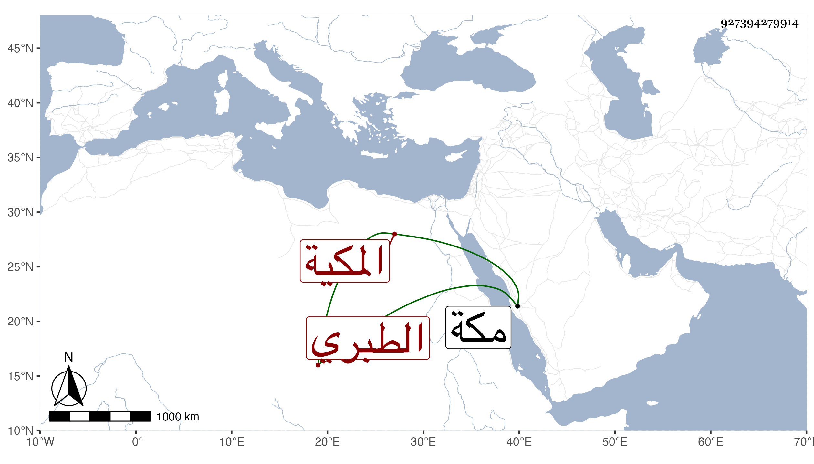

0902Sakhawi.DawLamic.ITO20230111-ara1.EIS1600.927394279914
Biography ID: 927394279914
938
أم كلثوم ابنة المحب محمد بن أحمد بن الرضى إبراهيم بن محمد بن إبراهيم الطبري المكية وتسمى سعيدة أمها زينب ابنة القاضي أبي الفضل النويري ، أجاز لها في سنة إحدى وسبعين وسبعمائة جماعة منهم البلقيني وابن الملقن والعراقي والهيثمي وآخرون ؛ وكانت دينة خيرة كاتبة قارئة حفظت أربعي النووي وعرضتها بكاملها على جماعة كأبيها وعم والدتها على بن أحمد النويري وخالها المحب النويري وذلك في سنة ثلاث وتسعين . ماتت في شعبان سنة سبع وثلاثين بمكة . ذكرها ابن فهد .
